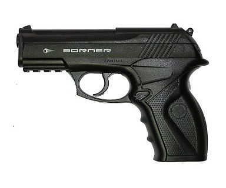
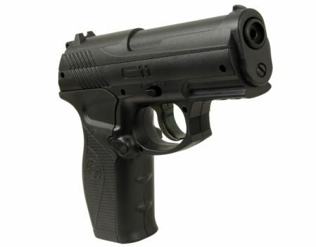
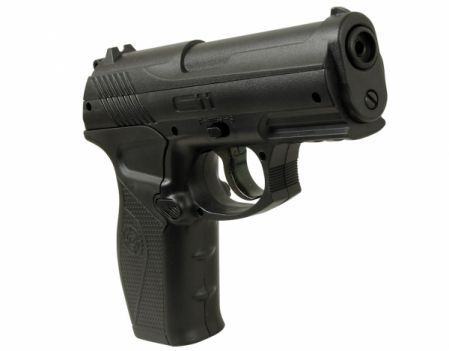

Пневматический пистолет Borner C11
Описание товара

Borner C11 – точный, мощный и надежный пневматический пистолет, внешне похожий на современное боевое оружие. Его корпус сделан из прочного и легкого пластика, а ствол, важные механизмы и магазин – из металла. «Борнер C11» идеально подходит для любительской или спортивной стрельбы на небольших расстояниях.
 


Комплектации
- Базовая
2789 руб 1995 руб
- Мастер
3709 руб 2675 руб
- Профи
5309 руб 3845 руб
Характеристики товара
Общие характеристики
Бренд Borner
Страна-производитель Тайвань
Остальные характеристики
Материал пластик
Цвет черный
Артикул 607-945
Дульная энергия (не более), Дж 3
Начальная скорость, м/с 120
Емкость магазина (барабана) 19
Тип пуль шарики ВВ
Канал ствола гладкий
Длина , мм 195
Материал ложе пластик
Цена 1950
Подробное описание товара
Borner C11 – точный, мощный и надежный пневматический пистолет, внешне похожий на современное боевое оружие. Его корпус сделан из прочного и легкого пластика, а ствол, важные механизмы и магазин – из металла. «Борнер C11» идеально подходит для любительской или спортивной стрельбы на небольших расстояниях.
Пистолет Borner C11 обладает такими важными преимуществами, как:
- высокая начальная скорость выстрела (до ста тридцати метров в секунду);
- большое число выстрелов с 1 зарядки (до шестидесяти);
- вместительный магазин (до девятнадцати зарядов одновременно);
- простая конструкция. Для извлечения магазина предусмотрена специальная кнопка на рукоятке. В пистолете «Борнер C11» также предусмотрен неавтоматический предохранитель, спусковой крючок которого имеет свободный ход;
- ударно-спусковой механизм одиночного действия (только в режиме самовзвода).
Пневматический пистолет Borner C11 оснащен открытым нерегулируемым прицелом. Он отштампован вместе с корпусом. На этом оружии есть планка Пикатинни для крепления лазерного целеуказателя или тактического фонаря.
Borner C11 – качественный пистолет. При бережной эксплуатации, правильном уходе и чистке оружия после использования он прослужит своему владельцу на протяжении долгих лет.
Сертификат

Все права защищены